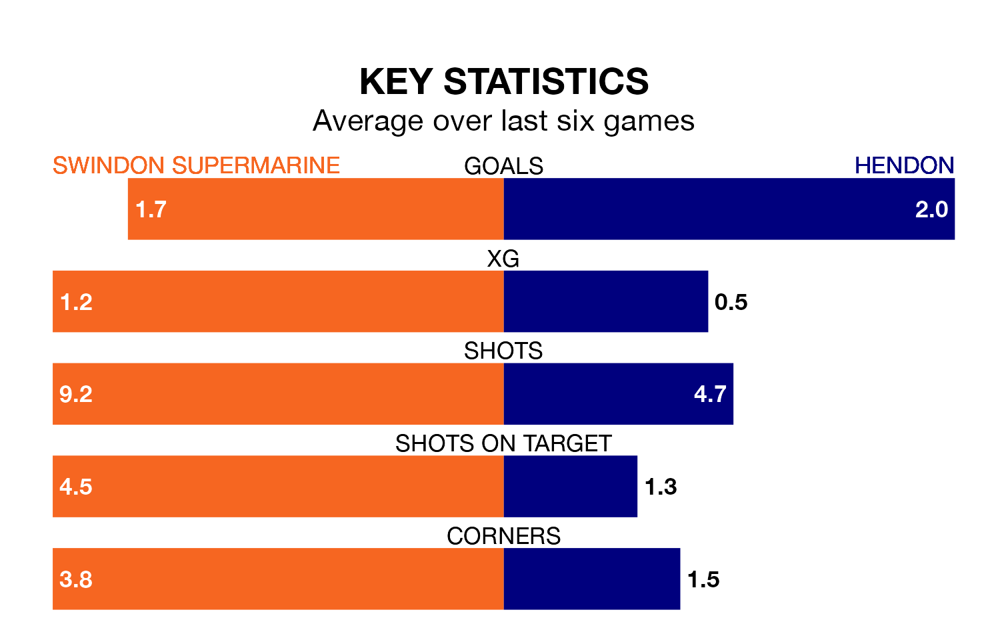

Hendon travel to Swindon Supermarine on Saturday in the Southern League Premier South.
The visitors come into the game on the back of a defeat in their last match, having lost to Basingstoke Town 3-2 away.
Swindon Supermarine, meanwhile, won their last match, 3-0 against Plymouth Parkway.
In the last 10 years, Swindon Supermarine and Hendon have played each other on seven occasions. Swindon Supermarine won two of them, Hendon three, and they drew twice.
On average, Swindon Supermarine scored 1.4 goals and Hendon 1.3 in those matches.
Their last meeting was on December 2, when Swindon Supermarine won 3-2 away.
With 56 goals in 32 games so far this season, Hendon are scoring more than average in the league with 1.8 goals per game. And they are conceding at an average rate, letting in 53 goals at a rate of 1.7 per game.
Swindon Supermarine, meanwhile, are average scorers, with 1.7 goals per game. They have conceded 2.3 goals per game.
The hosts are 16th in the table after 34 games, of which they have won 10 and drawn eight, earning 38 points.
The away side are six places ahead of Swindon Supermarine in 10th, with 11 wins and 11 draws putting them on 44 points.
Swindon Supermarine are in mixed form in the Southern League Premier South, with two wins and two draws from their last six games.
With a win and three draws over that period, Hendon's form is slightly worse – they have taken six points from 18, compared to the home team's eight.
Updated: 15:10 (UTC), 15/03/24